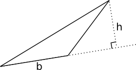
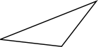
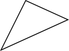
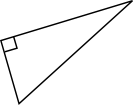
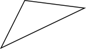
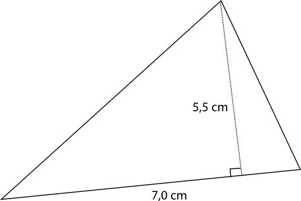
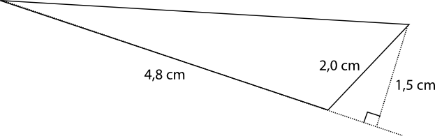
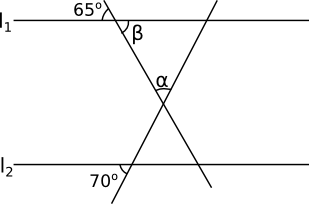
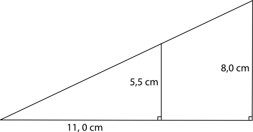

4. Triangeln
Exempel 1 Vi visar att triangelns vinkelsumma är 180o.
Arean, A, av en triangel är \( \dfrac{1}{2}bh\) .

Exempel 2 Arenan av en triangel är 10 cm2. Bestäm höjden då basen har längden 4 cm.
Lösning
\( \begin{array}{rrcll} \text{Arean för en triangel är} & A & = & \dfrac{1}{2}bh & \\ \\ \text{Med våra värden får vi att } & 10 & = & \dfrac{1}{2}\cdot h \cdot 4 & \mid \cdot \dfrac{2}{4} \\ \\ & h & = & \dfrac{10\cdot 2}{4} = 5 \textrm{ cm}\\ \end{array}\)
Uppgifter
- Kombinera rätt typ av triangel med rätt bild. Känner du dig osäker före du börjar, repetera här.
Påstående Spetsig Rät Trubbig 
 
   Påstående Spetsig Rät Trubbig - Bestäm trianglarnas areor.

\( A=\dfrac{1}{2}bh =\dfrac{1}{2}\cdot 7,0 \cdot 5,5 =19,25 \) cm2.

\( A =\dfrac{1}{2}bh = \dfrac{1}{2}\cdot 4,8\cdot1,5 = 3,6 \) cm2.

Vi får arean som
\( A = \dfrac{1}{2}bh =\dfrac{1}{2}\cdot 9,0\cdot 3,5 = 15,75\) cm2
eller som
\( A = \dfrac{1}{2}bh =\dfrac{1}{2}\cdot 3,5\cdot 9,0 = 15,75\) cm2.
Det beror på vad vi väljer till bas och höjd. Arean är ändå samma, 15,8 cm2.
- Bestäm storleken av vinklarna \( \alpha\) och \( \beta\) då \( l_1 \mid \mid l_2\) .

Observera att vi jobbar med trianglar.
\( \beta = 65^{\circ}\) eftersom den är vertikalvinkel med vinkeln 65o.
\( \alpha = 45^{\circ}\) eftersom den är en del av triangeln där de andra vinklarna är 65o och 70o. \( 180^{\circ}-(65^{\circ}+70^{\circ})=45^{\circ} \).
- Hur många procent utgör den mindre triangeln av den större triangelns area?

På vilka olika sätt kan vi lösa uppgiften? Lös den på de olika sätten.
Vi kan lösa den på två olika sätt: direkt genom likformighet och genom att bestämma deras areor.
Likformigheten ger oss att förhållandet mellan sidorna är \( \dfrac{5,5}{8,0}\) . Då är förhållandet mellan deras areor \( (\dfrac{5,5}{8,0})^2\) alltså \( 0,47265\ldots \approx 0,473 = 47,3\) %.
Bestämning av area. Den längre kateten i den större triangelns längd, \( x\) , får vi genom likformighet. \( \dfrac{x}{11} = \dfrac{8}{5,5} \Leftrightarrow x = 16\) .
Den mindre triangelns area är \( A=\dfrac{1}{2}bh = \dfrac{1}{2}\cdot 11\cdot 5,5 = 30,25\) cm2.
Den större triangelns area är \( A=\dfrac{1}{2}bh = \dfrac{1}{2}\cdot 16\cdot 8 = 64\) cm2.
Den procentuella andelen är \( \dfrac{30,25}{64} = 0,47265\ldots = 47,3\) %.
- Bestäm höjden för den triangel vars area är 14 cm2 och vars bas är 4 cm.
\( A=\dfrac{1}{2}bh\) . Alltså \( 14=\dfrac{1}{2}\cdot 4 \cdot h\) som ger att \( h=7\) cm.
- Bestäm basen för höjden då triangelns area är 0,68 m2 och höjden är 0,4 m.
Arean är \( A=\dfrac{1}{2}bh\) . Vi bildar ekvationen \( 0,68=\dfrac{1}{2}b\cdot 0,4\) som ger \( b=3,4\) .
Basen är 3,4 m
- Bestäm längden för basen och höjden då vi vet att deras förhållande är 1:4 och triangelns area är 10 a.e.
Rita bild och beteckna det obekanta med en variabel. Beteckningen a.e. står för area enheter.
Arean är \( A=\dfrac{1}{2}bh\) . Eftersom förhållandet bas: höjd är 1:4 kan vi beteckna som följande: basen: \( a\) , höjden: \( 4a\) .
Ekvationen blir \( 10=\dfrac{1}{2}a\cdot 4a\) . Lös ut \( a\) och svara.
Basen är \( \sqrt{5}\) l.e.
Höjden är \( 4\sqrt{5}\) l.e.
- Kan trianglar ha andra vinkelsummor än 180o?
Testa dig fram och rita trianglar på apelsiner/mandariner? Hurdana vinkelsummor får du om du ritar trianglar på en toroid (donits)?
Jo, det kan de ha om vi ritar dem på krökta ytor, plan. De trianglar som vi ritar på släta papper har en vinkelsumma som är 180o. Vi talar om Euklidisk geometri, den geometrin som du är van med från grundskolan.